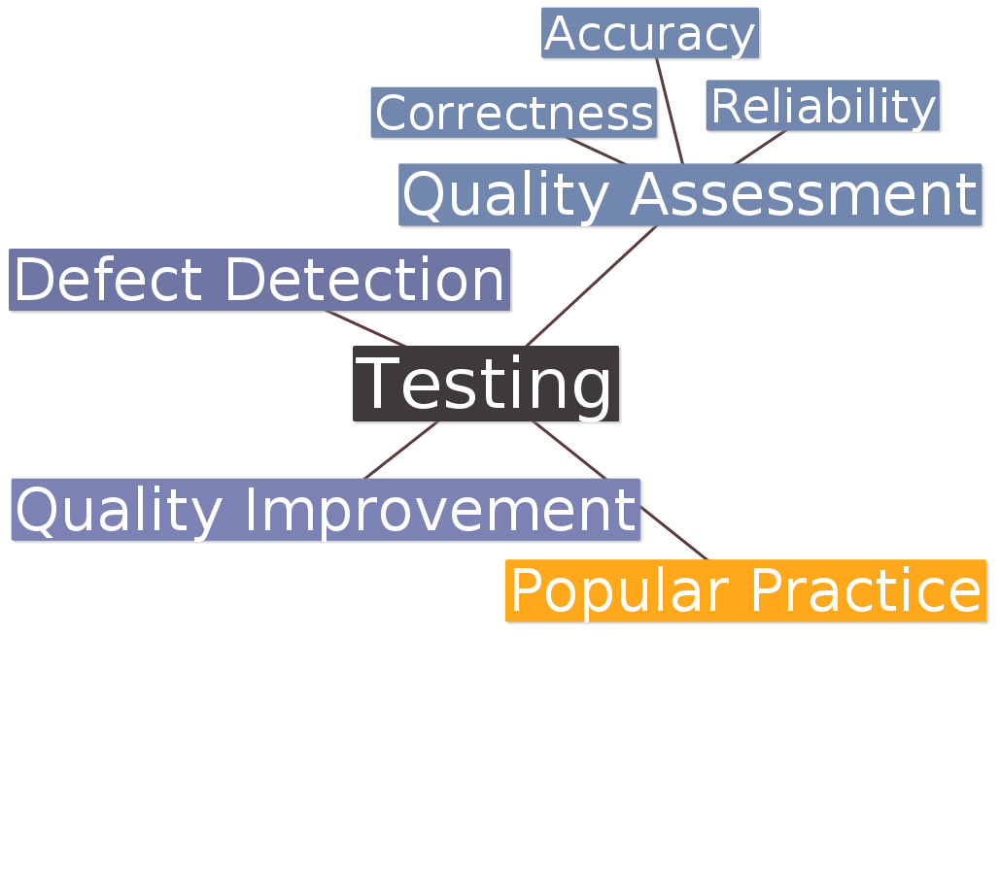
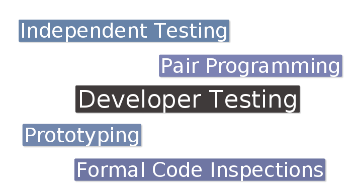
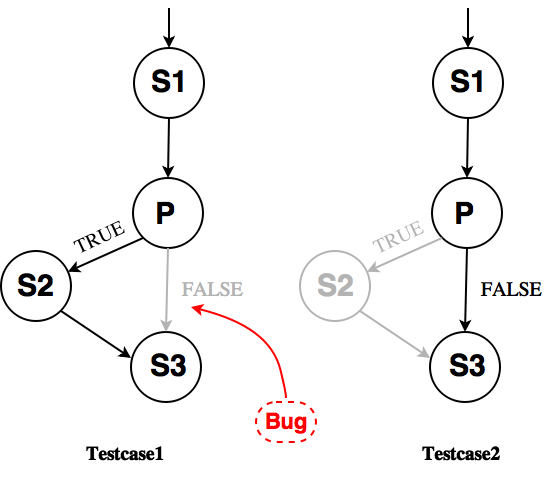
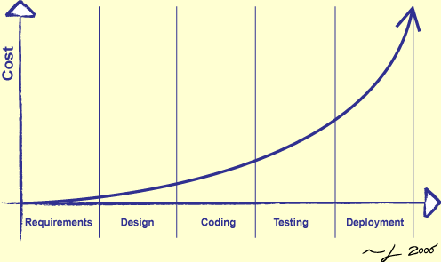

Your browser doesn't support the features required by impress.js, so you are presented with a simplified version of this presentation.
For the best experience please use the latest Chrome, Safari or Firefox browser.
Effective
Testing
Why do we test?
Outline
- Testing in General
- Effectiveness of Testing
- Problems with Testing
- Strategies for Effective Testing

Effectiveness of Testing
| Method | Defect-Detection Rates |
| Unit test | 30% |
| Component test | 30% |
| Integration test | 35% |
| Regression test | 25% |
|
|
|
| Informal design reviews | 35% |
| Formal design inspections | 55% |
| Formal code inspections | 60% |
| Prototyping | 65% |

<= 35%
Better
Why is testing not efficient?
Problems with Developer Testing
- Unwillingness to find errors
- Clean Test vs Dirty Test
- Insufficient test coverage
- Statement Coverage: tested lines
- Branch Coverage: tested pathes
Statement Coverage vs Branch Coverage
Example:
statement1;
if (predicate) {
statement2;
}
statement3

Effective Testing
- Hope to find bugs
- Aim for better test coverage
- Test as early as possible
- Test often and automatically
- Testing the test
Test as Early as Possible

http://www.cgl.ucsf.edu/Outreach/bmi280/slides/swc/lec/img
/dev01/boehm_curve.png
Test Often and Automatically
- Test after changes
- Regression Testing
- Find bug once
Testing the Test
- Errors in testcases
- Mutation Testing
- Saboteur
Take-home Message
- Test for high quality
- Combine different techniques
- Develop better testing habits